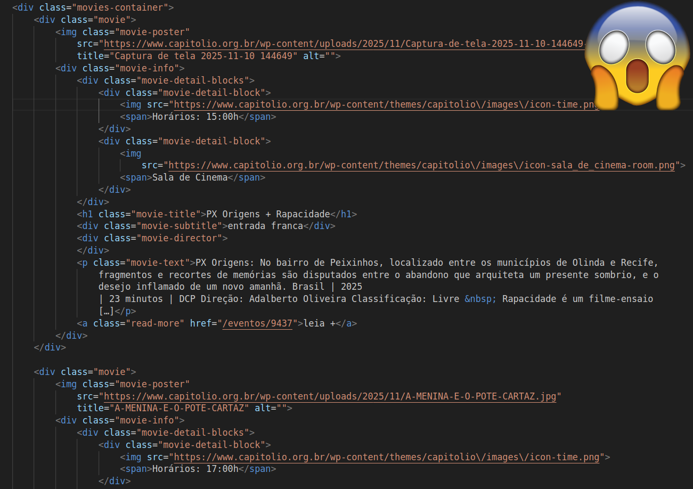
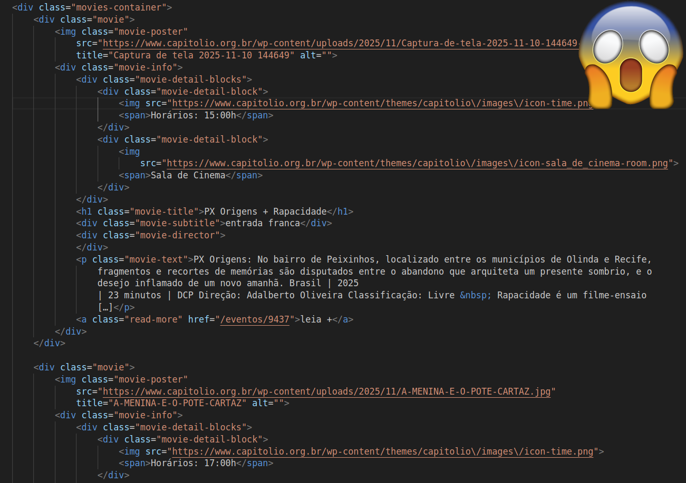
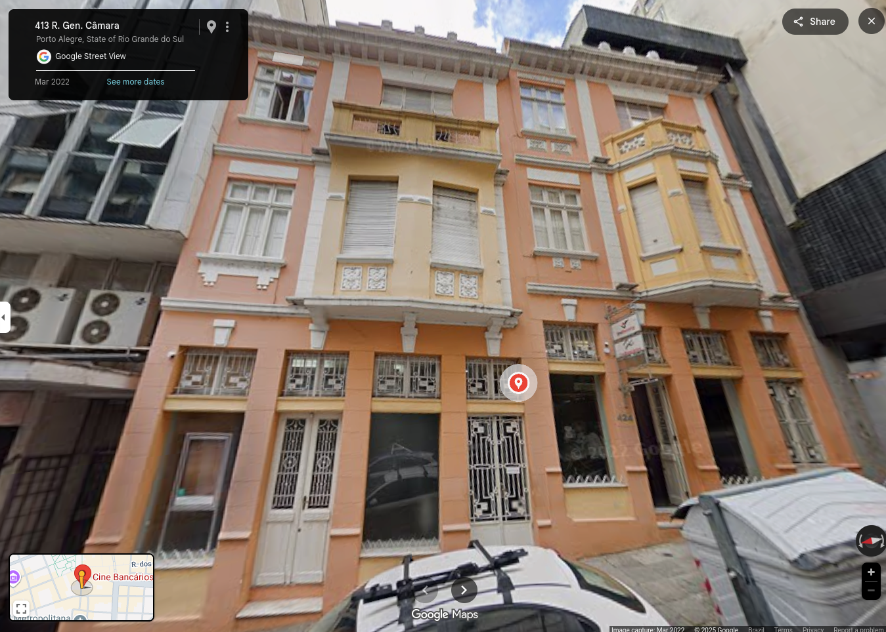
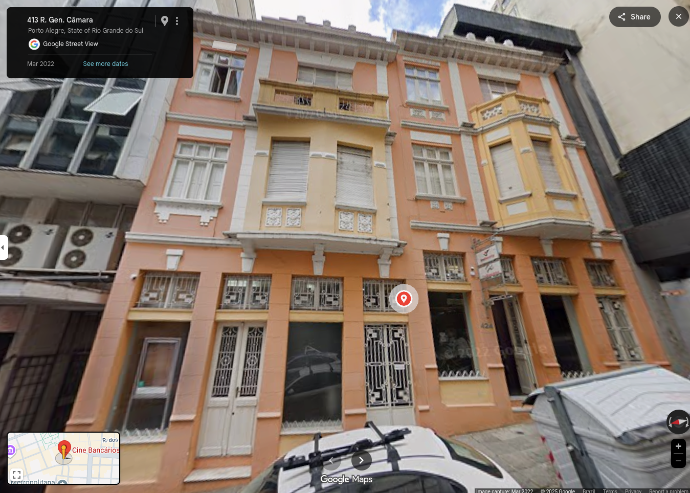
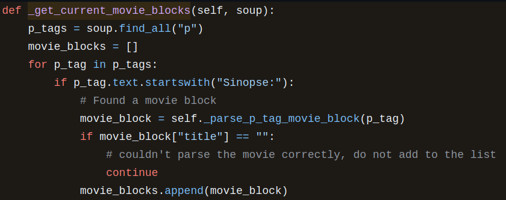
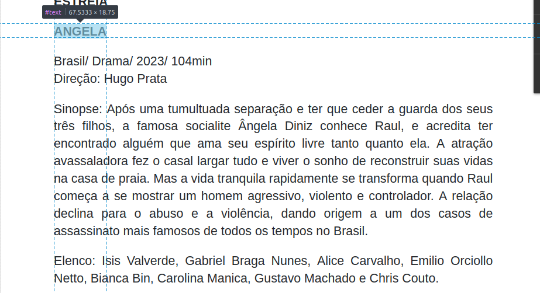
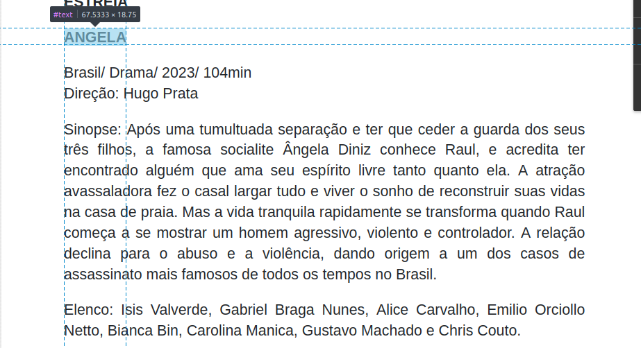

Do Regex a LLM
Extraindo horários de cinema de páginas imprevisíveis
 (Um estudo de caso do cinemaempoa.com.br)
(Um estudo de caso do cinemaempoa.com.br)
cinemaempoa
O cinemaempoa mostra os filmes em exibição no CineBancários, Cinemateca Capitólio, Cinemateca Paulo Amorim e Sala Redenção em Porto Alegre.
Interpretando HTML


 

HTML ... bem estruturado!

 Horários: 15:00h
Horários: 15:00h
 Sala de Cinema
Sala de Cinema
PX Origens + Rapacidade
entrada franca
PX Origens: No bairro de Peixinhos, localizado entre os municípios de Olinda e Recife,
fragmentos e recortes de memórias são disputados entre o abandono que arquiteta um presente sombrio, e o
desejo inflamado de um novo amanhã. Brasil | 2025
| 23 minutos | DCP Direção: Adalberto Oliveira Classificação: Livre Rapacidade é um filme-ensaio
[…]
leia +
 Horários: 17:00h
Sala de Cinema
Horários: 17:00h
Sala de Cinema
A Menina e o Pote + Cavaram uma Cova no Meu Coração + Quando Meu Mundo era Mais
Mundo
entrada franca
A Menina e o Pote: Dirigido por Valentina Homem e Tati Bond, o
curta-metragem A Menina e o Pote teve estreia mundial na Semana da Crítica do Festival de
Cannes e foi exibido em importantes festivais internacionais,
como Annecy, Gramado, Festival do Rio e Havana. A produção é da Sempre
Viva. A história parte de um conto escrito por Valentina Homem em 2012 e apresenta uma parábola sobre
[…]
leia +
 Horários: 19:00h
Sala de Cinema
Horários: 19:00h
Sala de Cinema
Cidade Pássaro
entrada franca
Brasil | 2020 | 1h 55 minutos | DCP
Direção: Mathias Mariani
Classificação: 16 anos
O nigeriano Amadi procura seu irmão Ikenna na cidade de São Paulo. Aos poucos percebe
que o supostamente bem sucedido professor de matemática inventou para sua família uma narrativa
imaginária de sua vida no Brasil. Amadi descobre lentamente
a verdade em uma missão pelo submundo da cidade. “Ao longo da minha vida a questão de […]
leia +
Mas... nem tudo são flores!
https://cinebancarios.blogspot.com 👀
CineBancarios: Um estudo de caso (do caos)
Apresentando o CineBancários
- Cinema em atividade desde ~2009
- Espaço dedicado a cultura
- Preços populares
- Programação diferenciada
Onde fica
 

um exemplo real
(em que existe alguma esperança)
O HTML por trás 
RETRATOS FANTASMAS
Brasil/Documentário/2022/ 93min.
Direção: Kleber Mendonça Filho
Sinopse: O filme tem o centro da cidade do Recife como personagem
principal, sendo um espaço histórico e humano, revisitado através
dos grandes cinemas que serviram como espaços de convívio durante o
século XX. Foram lugares de sonho e de indústria, e a relação das
pessoas com esse universo é um marcador de tempo para as mudanças
dos costumes em sociedade.
O ACIDENTE
Drama | 95 min. | Brasil
Sinopse: A ciclista Joana é vítima de um atropelamento. Ela foi
carregada no capô de um carro após antagonizar com uma motorista
que a cortou. A jovem sai ilesa e decide esconder o ocorrido de sua
parceira, Cecília, temendo que isso afete os planos do casal. Porém,
um vídeo viral aparece online, obrigando-a a prestar queixa na
polícia. Relutante, a dupla entra na vida de Elaine, a motorista,
seu ex-marido Cléber e seu filho Maicon, um introvertido cineasta
iniciante.
Elenco: Carol Martins (Joana), Carina Sehn (Cecília), Luis Felipe
Xavier (Maicon), Gabriela Greco (Elaine) e Marcello Crawshawn
(Cléber)
HORÁRIOS CINEBANCÁRIOS
24 a 30 de agosto
15h: RETRATOS
FANTASMAS
17h: O ACIDENTE
19h: RETRATOS
FANTASMAS
Um primeiro algoritmo
Implementação real (🍝): 
Um primeiro algoritmo
HDD (Hope driven development)
-
Esperamos que...
- adicionem o nome do diretor
- adicionem informação de país, genero, ano
- exista uma sinopse para cada filme que está passando
um outro exemplo
(em que existe menos esperança)
O HTML por trás 🥴
RETRATOS
FANTASMAS
Brasil/Documentário/2022/ 93min
Direção: Kleber Mendonça Filho
Sinopse: O
filme tem o centro da cidade do Recife como personagem principal, sendo um espaço histórico e humano, revisitado
através dos grandes cinemas que serviram como espaços de convívio durante o século XX. Foram lugares de sonho e de
indústria, e a relação das pessoas com esse universo é um marcador de tempo para as mudanças dos costumes em
sociedade.
PARA ONDE VOAM AS
FEITICEIRAS
Brasil/ Documentário/ 2020/ 89min
Direção: Eliane Caffé, Carla Caffé e Beto Amaral
Sinopse: Para onde voam as feiticeiras
acompanha a deriva de encenações e improvisos de sete artistas pelas ruas do centro de São Paulo em uma
experiência cinematográfica que torna visível a persistência de preconceitos arcaicos de gênero e raça no
imaginário comum. No centro desta narrativa polifônica está a importância da resistência política através
das alianças de luta comum entre coletivos LGBTQIA+, negritude, indígenas e trabalhadores sem teto.
HORÁRIOS CINEBANCÁRIOS
7 a 13 de setembro
15h: PARA ONDE VOAM AS FEITICEIRAS
17h: RETRATOS FANTASMAS
19h: ANGELA
Arrumando um pouco...
RETRATOS FANTASMAS
Brasil/Documentário/2022/ 93min
Direção: Kleber Mendonça Filho
Sinopse: O filme tem o centro da cidade do Recife como personagem principal, sendo um espaço histórico e humano, revisitado
através dos grandes cinemas que serviram como espaços de convívio durante o século XX. Foram lugares de sonho e de
indústria, e a relação das pessoas com esse universo é um marcador de tempo para as mudanças dos costumes em
sociedade.
PARA ONDE VOAM AS FEITICEIRAS
Brasil/ Documentário/ 2020/ 89min
Direção: Eliane Caffé, Carla Caffé e Beto Amaral
Sinopse: Para onde voam as feiticeiras
acompanha a deriva de encenações e improvisos de sete artistas pelas ruas do centro de São Paulo em uma
experiência cinematográfica que torna visível a persistência de preconceitos arcaicos de gênero e raça no
imaginário comum. No centro desta narrativa polifônica está a importância da resistência política através
das alianças de luta comum entre coletivos LGBTQIA+, negritude, indígenas e trabalhadores sem teto.
HORÁRIOS CINEBANCÁRIOS
7 a 13 de setembro
15h: PARA ONDE VOAM AS FEITICEIRAS
17h: RETRATOS FANTASMAS
19h: ANGELA
Acessando Text Nodes
 



A mesma lógica segue válida,
apenas trabalhamos com os nós de texto ao invés de elementos HTML
um exemplo pior
com um erro sutil
A saída do scrapper
[
{
"url": "https://cinebancarios.blogspot.com",
"cinema": "CineBancários",
"slug": "cinebancarios",
"features": [
{
"poster": "",
"title": "QUERIDO TRÓPICO",
"general_info": "Panamá/Colômbia/Drama/ 108min.",
"director": "Ana Endara",
"classification": false,
"excerpt": "Sinopse: Na vibrante cidade do Panamá, Ana Maria é uma imigrante colombiana que se torna cuidadora de Mercedes, uma rica mulher de meia idade que está lutando contra a demência. As duas desenvolvem uma inesperada amizade transformadora.",
"time": "",
"read_more": null
},
{
"poster": "",
"title": "O QUE A NATUREZA TE CONTA",
"general_info": "Coréia do sul/ Drama/ 2025/108min",
"director": "Hong Sang-soo",
"classification": false,
"excerpt": "Sinopse: Um jovem poeta deixa a namorada na casa dos pais dela e se surpreende com seu tamanho. Ele encontra o pai dela, conhece a mãe e a irmã dela e todas acabam passando um longo dia juntas; alimentadas por conversas, comida e bebidas.",
"time": "",
"read_more": null
},
{
"poster": "",
"title": "Brasil/França/Holanda/Alemanha /Drama/2024/ 158 min.Direção: Kleber Mendonça Filho",
"general_info": "Brasil/França/Holanda/Alemanha /Drama/2024/ 158 min.Direção: Kleber Mendonça FilhoBrasil/França/Holanda/Alemanha /Drama/2024/ 158 min.Direção: Kleber Mendonça Filho",
"director": false,
"classification": false,
"excerpt": "Sinopse: O longa é um thriller político, que acompanha Marcelo (Wagner Moura), um especialista em tecnologia que foge de um passado misterioso e volta ao Recife em busca de paz, mas logo percebe que a cidade está longe de ser o refúgio que procura.",
"time": "",
"read_more": null
}
]
}
]
Oh god why

E com o tempo acabamos assim...


Os resultados
{
"title": "Documentário Em busca de Iara segue em cartaz até dia 9",
"link": "http://cinebancarios.blogspot.com/2014/04/documentario-em-busca-de-iara-segue-em.html",
"pubDate": "2014-04-03T20:00:00+00:00",
"llm": "deepseek-chat",
"output": {
"movies": [
{
"title": "Em Busca de Iara",
"image_url": "https://blogger.googleusercontent.com/img/b/Iara+escadaria+Pacaembu_kinoscopio.jpg",
"general_info": "Brasil/documentário/2013/91min",
"director": "Flavio Frederico",
"classification": "Não informada",
"excerpt": "Documentário de Flavio Frederico que resgata a vida de Iara Iavelberg...",
"screening_dates": [
"2014-04-01 15:00",
"2014-04-01 17:00",
"2014-04-01 19:00",
"2014-04-09 15:00"
]
}
]
}
}
Os resultados
Parecem bons. Mas será que dá pra confiar?
🖤🖤🖤 Obrigado pela atenção 🖤🖤🖤
Participe do projeto: cinemaempoa.com.br